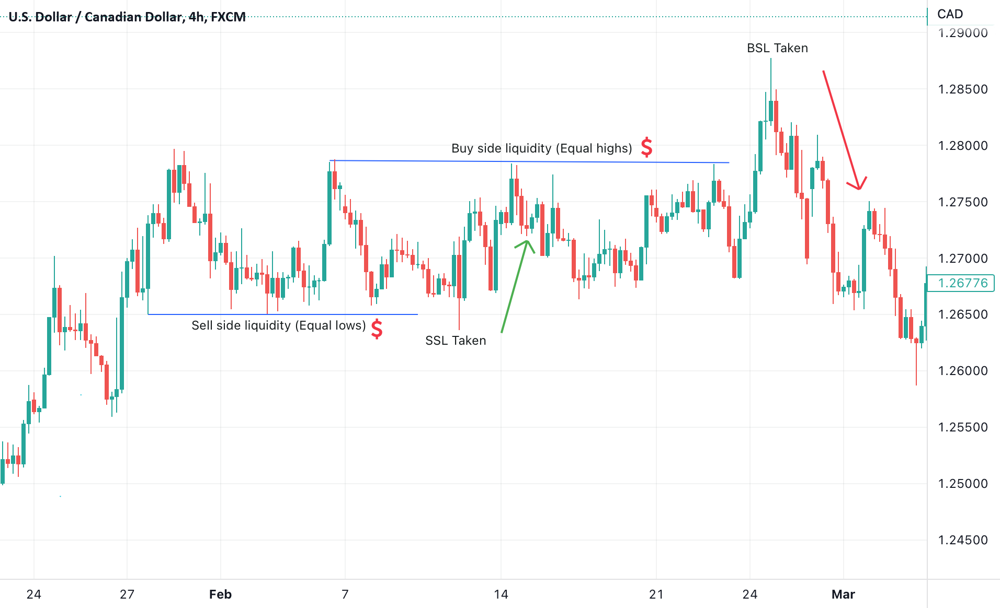
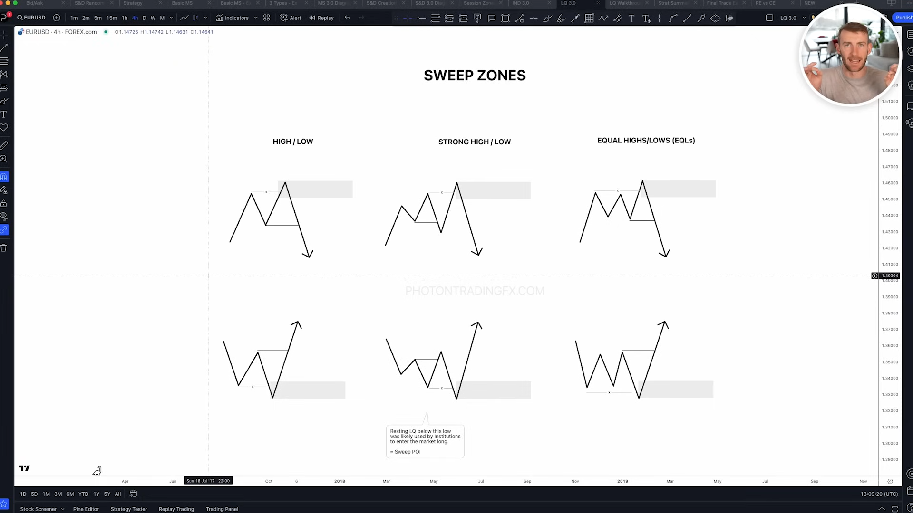
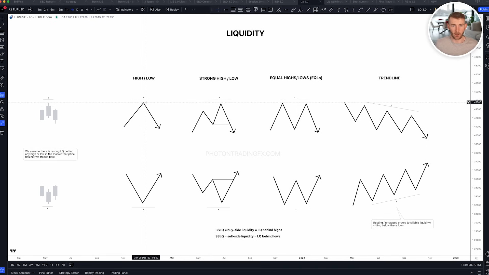
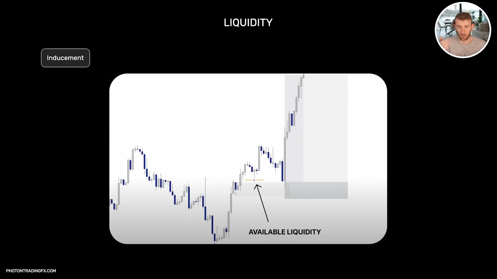

Liquidity Context - Pools, Grabs, Reclaims
00Core Concept
Liquidity Context answers three factual questions: where resting liquidity likely sits, whether price has taken it, and whether that take left a usable reclaim footprint. The job is not to call the market. The job is to preserve the lifecycle of each pool cleanly enough that Fusion, Evidence Compiler, and Layer 4 can read it without rescanning raw candles.

Discretionary idea notes
A trader sees a prior high, prior low, equal high cluster, equal low cluster, or HTF ITR anchor and asks: did price take it, fail to stay beyond it, and return with rejection?
Algorithm translation Layer 3
Turn each candidate level into a LiquidityPool. Each LTF cursor bar updates the pool from active to breached_outside_level, reclaimed status, and finally liquidity_grab_confirmed when the reclaim and evidence conditions are met.
01Object Model
The implemented engine centers on LiquidityPool and LiquidityEvent. Pools are remembered semantic objects; events are timestamped lifecycle transitions emitted as the LTF heartbeat interacts with those objects.
htf_pd, htf_eq, and htf_itr separate P/D boundary liquidity, general HTF equal highs/lows, and HTF ITR level or ITR EQ pools.
buy_side sits above highs and implies bearish reaction after reclaim. sell_side sits below lows and implies bullish reaction after reclaim.
level uses a single remembered price. eq uses ATR tolerance around comparable pivots.
Lifecycle status pool.status
active means the pool is remembered but untouched. breached_outside_level means liquidity was taken. Reclaim states indicate price returned to the origin side. liquidity_grab_confirmed requires take, reclaim, close-back-inside, and rejection evidence.
Event records LiquidityEvent
Event records keep event_type, pool_id, pool_kind, variant, source, side, direction, level_price, timestamp, confirmed_by, take_type, and approach/leave fields for HTF ITR trajectory checks. A confirmed grab/reclaim event receives the stable identity liquidity_event_id = pool_id + "|" + confirmed_at.
LiquidityPool pool_id pool_kind = htf_pd | htf_eq | htf_itr variant = level | eq source = range_high | range_low | eqh | eql | htf_itr_high | htf_itr_low | htf_itr_eqh | htf_itr_eql side = buy_side | sell_side direction = bearish | bullish price, tolerance, upper, lower scope = active_current_epoch | carryover_recent | external_archive htf_pd_epoch_id status, taken_at, reclaimed_at, confirmed_at evidence, confirmed_by, take_type approached_from, left_to Confirmed grab/reclaim event liquidity_event_id = pool_id + "|" + confirmed_at is_triggerable
Current Monitored Locations
The current engine monitors four liquidity families. Two are single-line levels and two are ATR-width pools around equal or comparable pivots. The LTF cursor bar observes all of them as the live heartbeat.
range_high and range_low from the active HTF P/D range. Snapshot Normalizer projects these as boundary grab/reclaim facts.
htf_itr_high and htf_itr_low from confirmed HTF ITR pivots. Snapshot Normalizer projects these as ITR grab/reclaim facts.
eqh and eql from comparable HTF pivots inside ATR tolerance. Snapshot Normalizer projects them as factual sweep/reclaim pool state.
htf_itr_eqh and htf_itr_eql from comparable HTF ITR pivots inside ATR tolerance. Snapshot Normalizer projects them as factual ITR liquidity pool state.
current_liquidity_locations:
htf_pd:
range_high -> buy_side line, reaction_direction = bearish
range_low -> sell_side line, reaction_direction = bullish
htf_itr:
htf_itr_high -> buy_side line, reaction_direction = bearish
htf_itr_low -> sell_side line, reaction_direction = bullish
htf_eq:
eqh -> buy_side ATR pool
eql -> sell_side ATR pool
htf_itr_eq:
htf_itr_eqh -> buy_side ATR pool
htf_itr_eql -> sell_side ATR pool
Liquidity Line + ATR Pool Math
Level liquidity is a remembered line. Equal-high/equal-low liquidity is a pool centered on a remembered level with tolerance derived from HTF ATR and a multiplier. In the current config, the multiplier is eq_threshold or itr.eq_threshold.
implemented breach price:
level pool:
tolerance = 0
buy_side breach = high > level
sell_side breach = low < level
eq pool:
tolerance = ATR_htf(atr_period) * threshold
buy_side breach = high > level + tolerance
sell_side breach = low < level - tolerance
reclaim:
buy_side reclaim = close < level
sell_side reclaim = close > level
02Memory Scope
Liquidity memory is scoped by the active HTF P/D epoch. Current pools can contribute triggerable events. Recent carryover pools can still contribute only when they remain relevant. External archive is retained for context, but cannot trigger downstream evidence.
Active current epoch normal trigger scope
When HTF structure projects the current P/D range, the engine upserts range_high and range_low P/D pools and scopes matching ITR pools into the current epoch.
Carryover recent limited trigger scope
Recent pools survive a range reset only when allowed by memory config. This preserves useful nearby ITR liquidity without letting every historical level compete forever.
External archive context only
Archived pools can explain that an old target was reached or that a distant level exists, but external_archive_can_trigger_hypothesis is false by default.
triggerable_pool =
pool.scope in {"active_current_epoch", "carryover_recent"}
and pool.status != "archived"
and pool passes current epoch / carryover relevance policy
current_triggerable_event =
confirmed event is inside ready TTL
and event.pool belongs to triggerable_pool set
*_grab_reclaim_ready = current_triggerable_event exists
03HTF P/D Boundary Grab Snapshot
This section is a factual Liquidity + Snapshot Normalizer contract. Liquidity Context detects the lifecycle of HTF P/D boundary and HTF EQ pools and exposes only events that still belong to the current triggerable set. Snapshot Normalizer projects those facts into ContextSnapshot. Evidence Compiler qualifies cross-channel chronology; Layer 4 later decides whether a qualified candidate matters to a thesis.

HTF P/D boundary pools range_high / range_low
range_high creates buy-side liquidity with bearish reaction direction after reclaim. range_low creates sell-side liquidity with bullish reaction direction after reclaim. The LTF heartbeat observes these HTF levels without waiting for the next HTF close.
HTF EQ pools eqh / eql
Comparable HTF pivots create an EQH/EQL pool when their distance is inside ATR tolerance. The implemented tolerance is HTF ATR * eq_threshold.
Confirmation take + reclaim + evidence
Confirmation requires a breach, a close back inside the level, and at least one rejection clue: rejection wick, hammer-like rejection, or counter FVG from CE02 events.
Formal EQ tolerance:
$$ |pivot_a - pivot_b| \le ATR_{htf}(n) \times threshold $$Snapshot Normalizer-projected fields htf_pd_grab_reclaim_ready htf_pd_grab_reclaim_event_id htf_pd_grab_reclaim_htf_pd_epoch_id htf_pd_grab_reclaim_scope htf_pd_grab_reclaim_is_triggerable htf_pd_grab_reclaim_side htf_pd_grab_reclaim_direction htf_pd_grab_reclaim_level htf_pd_grab_reclaim_source htf_pd_grab_reclaim_taken_at htf_pd_grab_reclaim_reclaimed_at htf_pd_grab_reclaim_confirmed_at htf_pd_grab_reclaim_confirmed_by htf_eq_grab_reclaim_ready htf_eq_grab_reclaim_event_id htf_eq_grab_reclaim_htf_pd_epoch_id htf_eq_grab_reclaim_scope htf_eq_grab_reclaim_is_triggerable htf_eq_grab_reclaim_side htf_eq_grab_reclaim_direction htf_eq_grab_reclaim_level htf_eq_grab_reclaim_source htf_eq_grab_reclaim_taken_at htf_eq_grab_reclaim_reclaimed_at htf_eq_grab_reclaim_confirmed_at
liquidity_relation_to_htf_expansion_extreme because EC owns the neutral HTF expansion tracker. Layer 3 must not receive Phase E state back from Layer 4. Layer 4 later selects a D node from qualified candidates.04HTF ITR Level / EQ Grab Snapshot
This section is also a factual Liquidity + Snapshot Normalizer contract. Liquidity Context detects HTF ITR level and HTF ITR EQ pool lifecycle. Snapshot Normalizer projects readiness, source, level, variant, direction, and trajectory fields. Evidence Compiler may later qualify those facts into a candidate pattern; Layer 4 decides whether it supports a hypothesis.

ITR level grab htf_itr_high / htf_itr_low
A confirmed HTF ITR high creates buy-side liquidity. A confirmed HTF ITR low creates sell-side liquidity. The engine requires the grab to approach from the correct side and leave back to the origin side.
ITR EQ grab htf_itr_eqh / htf_itr_eql
Comparable HTF ITR highs/lows can create ITR-specific EQ pools. These keep HTF ITR clustered liquidity distinct from broader HTF EQ pool facts.
Anchor run after confirmation confirmed_itr_anchor_run
After a HTF ITR grab/reclaim is confirmed, a later run through that same confirmed anchor can emit confirmed_itr_anchor_run. This lets Layer 4 separate the initial grab from a later continuation or target reach event.
Required ITR trajectory
sell-side ITR low / EQL:
came_from = above
left_to = above
direction = bullish
buy-side ITR high / EQH:
came_from = below
left_to = below
direction = bearish
Snapshot Normalizer-projected fields htf_itr_grab_reclaim_ready htf_itr_level_grab_reclaim_ready htf_itr_eq_grab_reclaim_ready htf_itr_grab_reclaim_variant htf_itr_grab_reclaim_side htf_itr_grab_reclaim_direction htf_itr_grab_reclaim_level htf_itr_grab_reclaim_source htf_itr_grab_reclaim_came_from htf_itr_grab_reclaim_left_to htf_itr_anchor_run_ready htf_itr_level_anchor_run_ready htf_itr_eq_anchor_run_ready
grab_reclaim_at_htf_itr_level. Layer 4 language, if chosen later: a possible B-related initiation-watch node.05Relations
The ambiguity notes proposed richer relation objects: sweep zones, inducement candidates, and relations such as sweep_before_sd or inducement_near_sd. The current engine implements the pool/grab/reclaim core first; these richer relation objects remain a follow-on Evidence Compiler or Liquidity Context expansion.

Sweep zone candidate relation
A sweep zone can summarize the price band made by a take/reclaim. This is useful when multiple later bars interact with the footprint rather than the exact pool price.
Inducement candidate candidate relation
Inducement needs proximity and ordering: a liquidity event before/near an S/D zone, followed by reaction or continuation. That relationship should be compiled from existing context facts instead of guessed directly from one candle.
Layer boundary Evidence Compiler
Liquidity Context should expose pool lifecycle facts. Evidence Compiler can later qualify relation patterns such as sweep_before_sd, inducement_near_sd, or grab_reclaim_at_pd_boundary.
06Snapshot Contract
The target runtime snapshot exposes active pool collections, event logs, current triggerable events, source levels, direction, confirmation method, and ITR trajectory fields. A readiness flag is valid only while its identified event remains in the current triggerable set.
Liquidity snapshot active_htf_pd_pools[] active_htf_eq_pools[] active_htf_itr_pools[] # filtered to triggerable scope current_triggerable_liquidity_events[] events[] event_log[] htf_pd_grab_reclaim_ready htf_eq_grab_reclaim_ready htf_itr_grab_reclaim_ready htf_itr_level_grab_reclaim_ready htf_itr_eq_grab_reclaim_ready htf_itr_anchor_run_ready htf_itr_level_anchor_run_ready htf_itr_eq_anchor_run_ready *_side *_direction *_level *_source *_pool_id *_event_id # pool_id + "|" + confirmed_at *_htf_pd_epoch_id *_scope *_is_triggerable *_take_type *_taken_at *_reclaimed_at *_confirmed_at *_confirmed_by htf_itr_grab_reclaim_came_from htf_itr_grab_reclaim_left_to
07Algorithm
The current implementation is a two-heartbeat design. Higher-timeframe bars create or rescope pools. Lower-timeframe bars update the lifecycle of those pools.
def on_higher_bar(row, pivot_events, higher_structure):
self._higher_index += 1
self._update_atr(row)
self.observe_higher_structure(higher_structure)
if itr_enabled:
self._observe_itr_pivots(pivot_events)
if eq_enabled:
self._observe_eq_pivots(pivot_events)
self._limit_confirmed_itr_anchor_watch()
def on_lower_bar(row, ce02_events=None, lower_index=None):
self._current_lower_index = lower_index
for pool in pd_pools + eq_pools + itr_pools:
self._observe_pool_interaction(
pool,
row,
ce02_events or [],
lower_index,
)
self._limit_confirmed_itr_anchor_watch()
def _can_confirm_grab(pool):
evidence = pool.evidence
return (
pool.taken_at is not None
and pool.reclaimed_at is not None
and evidence.get("close_back_inside")
and (
evidence.get("rejection_wick")
or evidence.get("hammer_like_rejection")
or evidence.get("counter_fvg")
)
)
Take detection _observe_pool_interaction
Buy-side pools are breached when the LTF high trades above the breach price. Sell-side pools are breached when the LTF low trades below the breach price. EQ pools adjust breach price by tolerance.
Reclaim detection close-based
Buy-side pools reclaim when close returns below the pool price. Sell-side pools reclaim when close returns above the pool price.
Expiry and reset grab window
If the grab does not produce confirmation within grab.evidence_window_bars, the unconfirmed take is reset back to active.
08Config
The current config already defines liquidity memory limits, grab windows, EQ tolerance, ITR pool behavior, and archive trigger rules.
liquidity:
enabled: true
event_log_limit: 50
grab:
evidence_window_bars: 8
ready_ttl_bars: 16
eq:
enabled: true
atr_period: 14
eq_threshold: 0.1
calculation_timeframe: htf
pivot_tier: itr
itr:
enabled: true
eq_enabled: true
eq_threshold: 0.1
calculation_timeframe: htf
pivot_tier: itr
memory:
carryover_recent_pools: 3
carryover_requires_overlap_with_current_pd: true
max_active_itr_pools_per_side: 5
max_pool_age_htf_bars: 50
max_confirmed_anchor_watch_per_side: 3
anchor_watch_ttl_htf_bars: 20
external_archive_enabled: true
external_archive_can_trigger_hypothesis: false
grab_cfg = cfg.get("grab", {})
self.grab_evidence_window_bars = max(1, int(grab_cfg.get("evidence_window_bars", 8)))
self.ready_ttl_bars = max(1, int(grab_cfg.get("ready_ttl_bars", 16)))
self.event_log_limit = max(1, int(cfg.get("event_log_limit", 50)))
eq_cfg = cfg.get("eq", {})
self.eq_enabled = bool(eq_cfg.get("enabled", True))
self.eq_atr_period = max(1, int(eq_cfg.get("atr_period", 14)))
self.eq_threshold = float(eq_cfg.get("eq_threshold", 0.1))
itr_cfg = cfg.get("itr", {})
self.itr_enabled = bool(itr_cfg.get("enabled", True))
self.itr_eq_enabled = bool(itr_cfg.get("eq_enabled", True))
self.itr_eq_threshold = float(itr_cfg.get("eq_threshold", self.eq_threshold))
memory_cfg = cfg.get("memory", {})
self.carryover_recent_pools = max(0, int(memory_cfg.get("carryover_recent_pools", 3)))
self.max_active_itr_pools_per_side = max(1, int(memory_cfg.get("max_active_itr_pools_per_side", 5)))
self.max_pool_age_htf_bars = max(1, int(memory_cfg.get("max_pool_age_htf_bars", 50)))
09Open Issues
Old wording called these sections D-Focus Grabs and B-Focus Grabs. Archived meaning: HTF P/D boundary grab/reclaim may later support a D candidate; HTF ITR level/EQ grab/reclaim may later support a B initiation-watch candidate. That interpretation now belongs to Evidence Compiler and Layer 4, not Liquidity or Snapshot Normalizer.
The D note describes almost_touch, sweep_buffer, and touch_tolerance. The current engine uses direct level breach plus EQ tolerance, so explicit buffer tuning is still pending.
Trendline liquidity, session highs/lows, weak pivots, and fully generic swing liquidity remain outside V1. Current scope is HTF P/D, HTF EQ, and HTF ITR.
Disable eq.enabled or itr.eq_enabled, raise ATR tolerance selectivity, or keep only P/D boundary and ITR level pools until the market structure is cleaner.
Add *_event_id, *_htf_pd_epoch_id, *_scope, *_is_triggerable, and current_triggerable_liquidity_events[]. Clear or archive cached confirmed P/D events on epoch change and apply scope/age policy to HTF EQ pools.
Liquidity cannot author relation_to_htf_expansion_extreme without reading an EC-owned tracker. The target boundary keeps event geometry and scope here, then lets Evidence Compiler derive the relation from its neutral HTF expansion watermark. Do not emit Phase E state back into Layer 3.